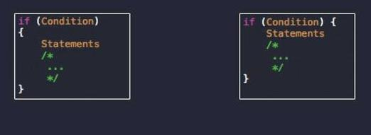

Universidad Nacional Experimental Del Táchira
Decanato De Docencia
Dpto. Ingeniería Informática
Convenciones de código
Programación II (Cod. 0415405T)
Temas a tratar
- Introducción
- Estilos de programación
- ¿Por qué respetarlos?
- Principales guías de estilos
- Conclusiones
Requisitos previos
- Principios básicos de programación
- Estructura de un código fuente en distintos lenguajes
- Experiencia de trabajo de en equipo
- Uso de control de versiones (opcional)
Objetivo de la clase
- Aprender las normas básicas para crear buen código.
- Como escribir código que sea fácil de leer.
- Descubrir las diferentes convenciones utilizadas por varios proyectos de software de código abierto.
¡Comencemos!
Introducción
- Cuando hablamos español, ¿cuáles son las consecuencias de no respetar las reglas del idioma?
- ¿Cuántas personas crees que trabajan en el desarrollo de Linux, Windows, Firefox, Android?
Estilos de Programación
- También conocido como estándares de programación o convenciones de código.
- Son reglas para definir como se debe escribir el código fuente de programas.
- Varían dependiendo del lenguaje porque no todos tienen la misma estructura.
Consejo de programación
“Siempre escribe código como si la persona que termina manteniendo tu código será un psicópata violento que sabe donde vives."John Woods, 1991.
Estilos de Programación
- Pueden existir variaciones de los estilos de programación dependiendo del proyecto, framework, versión del lenguaje, entre otros. (PHP es un ejemplo de ello)
- Existen herramientas que permiten validar el código fuente.
Principales convenciones
- Nombres de variable.
- Sangría (espacios vs tabuladores)
-
Forma de definir estructuras de control:
- Condiciones.
- Ciclos.
- Funciones.
- Uso de camelCase o underscore_vars.
- Estructura de comentarios.
- Espacios entre líneas.
"Deberías nombrar una variable usando el mismo cuidado con el cual nombras a tu hijo primogénito” James O. Coplien.
"El código auto-comentado es un mito. El código solo comunica acciones, no intención. Tampoco comunica suposiciones sobre limitaciones de entrada.” Tom Preston-Werner.
Existen 2 tipos de programadores:
¿Cuál eres tú?
Principales tipos de espaciado
Principales tipos de espaciado
-
Estilo K&R
- Kernel Linux
- BSD KNF
- Estilo Allman
- Estilo Whitesmith
- Estilo GNU
- Estilo Hortman
- Estilo Pico
Principales tipos de espaciado
Estilo K&R
- Creado por Kernighan y Dennis Ritchie.
- Usando ampliamente en lenguaje C.
- Las llaves van en una nueva línea.
- Los bloques de código de una sola línea no llevan llaves
- No se dejan líneas vacías
int main(int argc, char *argv[])
{
...
while (x == y) {
something();
somethingelse();
if (some_error)
do_correct();
else
continue_as_usual();
}
finalthing();
...
}
Principales tipos de espaciado
Estilo K&R (Kernel Linux)
- Utilizado en el desarrollo de Linux. Linus Torvald suele forzar su uso.
- Las llaves van en una nueva línea para las funciones, de resto en la misma separada por espacio.
- Utiliza tabs de 8 espacios.
- El tamaño máximo de línea son 80 caracteres
int power(int x, int y)
{
int result;
if (y < 0) {
result = 0;
} else {
result = 1;
while (y-- > 0)
result *= x;
}
return result;
}
Principales tipos de espaciado
Estilo K&R (BSD)
- Utilizado en los núcleos BSD.
- Utiliza sangría de 8 espacios en funciones, para el resto sangría de 4 espacios.
- Si una función no declara variables locales debe dejar una línea
int power(int x, int y) {
if (y < 0) {
y++;
} else {
while (y-- > 0)
x++;
}
return false;
}
Principales tipos de espaciado
Estilo Allman
- Las llaves van en nueva línea a la misma sangría que la sentencia anterior.
- Se deja un espacio en las llaves de cierre.
- Permite identificar fácilmente los bloques al dejar espacios verticales.
- Influenciado por el lenguaje PASCAL
while (x == y)
{
something();
somethingElse();
}
finalthing();
Principales tipos de espaciado
Estilo Whitesmith
- Las llaves van en nueva línea al siguiente nivel de sangría.
- Se deja un espacio en las llaves de cierre.
- Identifica fácilmente los bloques al dejar espacios verticales.
while (x == y)
{
something();
somethingElse();
}
finalthing();
- Utilizado por el compilador Whitesmith y usado ampliamente en los primeros días de Windows, al aparecer en varios libros del S.O.
Principales tipos de espaciado
Estilo GNU
- Las llaves van en nueva línea pero con sangría 2 espacios.
- El bloque va con 2 espacios adicionales.
- Las llamadas a función tienen un espacio antes de los paréntesis.
- Utilizado por la mayoría de proyectos GNU.
static char *
concat (char *s1, char *s2)
{
while (x == y)
{
something ();
somethingelse ();
}
finalthing ();
}
{kind=link}